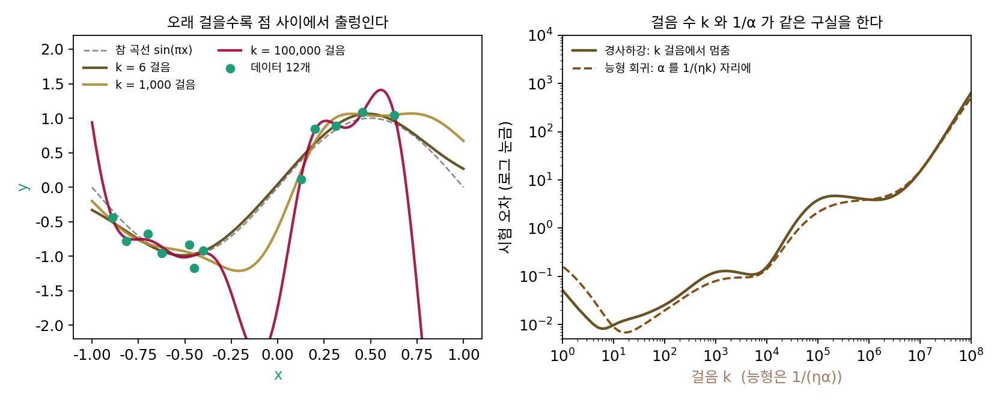
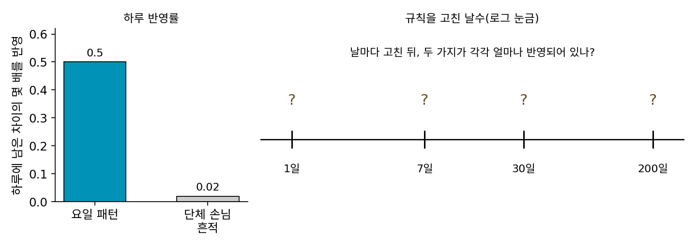
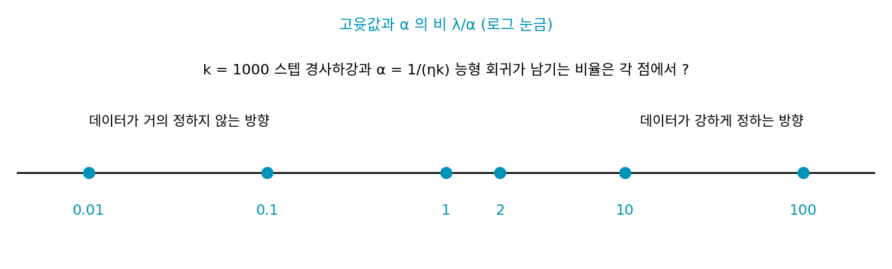
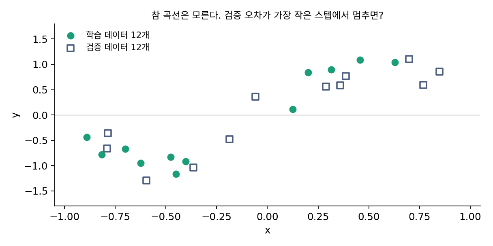

일찍 멈추기: 스텝 수가 정규화의 세기다
최소 노름 해와 최대 마진은 「끝까지 학습하면 어디에 닿는가」였지만, 신경망을 학습하는 사람은 끝까지 가지 않는 일이 많다. 검증 오차가 가장 낮았던 스텝의 체크포인트(학습 도중 저장해 둔 파라미터)를 골라 쓰고, 검증 오차가 몇 번 연속 나빠지면 학습을 멈춘다. 데이터에 노이즈가 섞여 있으면 끝까지 간 해는 노이즈까지 외우는데, 학습 손실을 끝까지 줄이지 않고 도중에 멈춘 해는 무엇이 다를까? 그 해는 손실에 정규화 항을 더해 끝까지 학습한 해와 어떤 관계일까?
역사: 적분방정식에서 신경망까지
일찍 멈추기는 신경망보다 먼저 역문제(관측한 결과에서 원인을 거꾸로 찾는 문제)에서 쓰였다. 미국의 루이스 랜드웨버(Louis Landweber)는 1951년 『미국 수학 저널』에 「제1종 프레드홀름 적분방정식을 위한 반복 공식」을 냈다. 흐릿하게 번진 관측에서 원래 신호를 되살리는 꼴의 방정식인데, 바로 풀면 관측의 작은 노이즈가 엄청나게 부풀어 답이 망가진다. 그가 낸 반복은 지금 말로 하면 제곱 오차의 경사하강이다. 이 반복을 오래 돌리면 처음에는 원래 신호에 다가가다가, 어느 순간부터 노이즈를 되살리며 다시 멀어진다. 그래서 적당한 횟수에서 멈춰야 했고, 역문제를 다루는 사람들은 반복 횟수의 역수를 정규화의 세기처럼 다루게 되었다.
신경망에서는 1989년 신경정보처리학회(NIPS)에서 넬슨 모건(Nelson Morgan)과 에르베 부를라르(Hervé Bourlard)가 발표한 「앞먹임 신경망의 일반화와 파라미터 추정: 몇 가지 실험」이 자주 인용된다. 그들은 신호 대 잡음비를 조절한 모의 데이터와 실제 음성 데이터로 역전파 학습을 하며 가중치 수와 일반화의 관계를 재고, 따로 떼어 둔 데이터로 성능을 보는 교차 검증으로 오버피팅을 막는 법을 보였다. 검증 데이터로 멈출 때를 고르는 지금의 습관이 이런 실험에서 굳어졌다.

일찍 멈추기는 검증 오차가 오르면 학습을 끄는 거잖아요. 그게 1951년 논문까지 거슬러 올라간다니 좀 거창해 보여요.

랜드웨버가 다룬 건 흐릿하게 번진 관측에서 원래 신호를 되살리는 문제였어요. 그 사람 손에 검증 오차가 있었을까요?

음… 검증 오차를 재려면 원래 신호를 알거나 관측을 따로 떼어 둬야 하잖아요. 원래 신호는 모르니까 되살리려는 거고, 관측도 한 번뿐이면… 잴 게 없네요.

그래서 역문제 쪽에서는 멈출 때를 관측 노이즈의 크기를 짐작해 정하는 식으로 다른 단서에 기대야 했어요. 따로 떼어 둔 데이터로 고르는 습관은 모건과 부를라르의 실험처럼 데이터를 나눠 쓸 수 있는 신경망 학습에서 굳었고요.

아, 저는 검증 데이터를 떼어 두는 걸 당연하게 생각했는데, 데이터가 넉넉해야 쓸 수 있는 방법이었네요.

그런데 반복 횟수의 역수를 정규화 세기처럼 다뤘다는 게 걸려요. 횟수는 정수고 정규화는 손실에 더하는 항인데, 둘이 무엇을 똑같이 억누르길래 바꿔 쓸 수 있는 거죠?
점 열두 개, 가중치 마흔 개
곡선 맞추기로 보자. [−1, 1]에서 고른 점 12개의 참값은 sin(πx)이고, 관측에는 표준편차 0.3의 노이즈가 섞였다(씨앗 2). 특징은 가운데를 −1.2에서 1.2까지 고르게 둔 폭 0.2의 가우스 혹 40개다. 파라미터 40개가 데이터 12개보다 많으니, 학습 데이터를 모두 지나는 곡선이 수없이 많다. 0에서 출발해 학습률 1/L = 0.3979로 경사하강을 하며, 스텝마다 [−1, 1]의 401개 점에서 참 곡선과의 평균 제곱 오차(시험 오차)를 쟀다.
| 스텝 k | 학습 오차 | 시험 오차 | ‖w‖ |
|---|---|---|---|
| 1 | 0.0777 | 0.0519 | 0.483 |
| 10 | 0.0196 | 0.0098 | 0.628 |
| 100 | 0.0171 | 0.0255 | 0.673 |
| 1,000 | 0.0145 | 0.1213 | 1.008 |
| 100,000 | 0.0070 | 3.8134 | 10.693 |
| 100,000,000 | 0.0034 | 630.38 | 249.425 |
학습 오차는 끝까지 줄지만 시험 오차는 6번째 스텝에서 0.0082로 가장 낮고, 그 뒤로는 오른다. 1억 스텝이면 시험 오차가 630이다. 데이터가 없는 구간(−0.40에서 0.13 사이, 0.63보다 오른쪽)에서 곡선이 크게 출렁이기 때문이다. 이 경사하강을 끝까지 돌리면 닿을 곳은 최소 노름 해, 곧 학습 데이터를 모두 지나는 가장 짧은 해인데, 그 해의 노름은 885.9이고 시험 오차는 7,599다. 0에서 출발한 경사하강은 가장 짧은 해로 가지만, 노이즈가 섞인 데이터를 모두 지나는 해 가운데 가장 짧은 해도 이렇게 길다.
학습을 멈춘 스텝 수 k는 무엇과 견줄 수 있을까? 같은 데이터에 손실 + (α/2)‖w‖²을 끝까지 줄이는 능형 회귀(가중치 감쇠와 같은 꼴)를 하고, α(알파)를 1/(ηk)로 맞춰 놓으면 두 시험 오차 곡선이 거의 겹친다(아래 그림 오른쪽). 능형 회귀가 가장 좋은 α = 0.1481은 17스텝에 해당하고 시험 오차는 0.0068이다. 스텝 수 k를 늘리는 것과 페널티 세기 α를 줄이는 것이 같은 구실을 한다.

스텝 수와 페널티 세기가 왜 같은 구실을 하는지는 손실의 헤시안(2차 편미분을 모은 행렬)의 고유 방향마다 따로 보면 드러난다. 0에서 출발한 경사하강은 고윳값이 λ(람다)인 방향의 성분을 스텝마다 1 − ηλ배씩 줄어드는 차이만큼 채워 간다. 능형 회귀는 같은 방향의 성분을 정해진 비율만큼만 남긴다.
데이터가 강하게 정하는 방향(λ가 큰 방향)은 두 방법 모두 거의 1을 남기고, 데이터가 거의 정하지 않는 방향(λ가 아주 작은 방향)은 두 방법 모두 거의 0을 남긴다. 스텝 100에서 이 문제의 고윳값 열두 개를 대 보면, 가장 큰 넷은 경사하강 1.0000 대 능형 0.95~0.99, 0.006인 방향은 0.2131 대 0.1932, 0.00024인 방향은 0.0097 대 0.0096이다. 노이즈를 외우는 데 쓰이는 것은 주로 고윳값이 작은 방향이고, 그 방향은 경사하강이 가장 늦게 채운다. 그래서 일찍 멈추면 노이즈를 외우기 전에 멈춘다. 이렇게 학습을 끝까지 하지 않고 검증 오차가 가장 낮은 스텝에서 멈추는 방법을 일찍 멈추기 (스텝 수로 거는 정규화 / early stopping)라 한다.
ML에서: 신경망은 쉬운 규칙부터 배운다
신경망에서 일찍 멈추기가 왜 통하는지도 같은 그림으로 설명된다. 데반시 아르핏(Devansh Arpit), 스타니스와프 야스트솅브스키(Stanisław Jastrzębski)와 동료들은 2017년 ICML의 「깊은 신경망의 암기를 더 가까이 보기」에서, 진짜 데이터와 무작위 노이즈를 함께 학습시키면 신경망이 먼저 단순한 규칙을 배우고 노이즈는 나중에 외우는 경향이 있다고 보고했다. 곡선 맞추기에서 고윳값이 큰 방향이 먼저 채워지고 노이즈를 담는 작은 방향이 나중에 채워진 것과 같은 순서다. 그래서 학습 도중 어딘가에 「규칙은 배웠고 노이즈는 아직 덜 외운」 지점이 생기고, 일찍 멈추기는 검증 데이터로 그 지점을 찾는다. 검증 오차가 정해 둔 스텝 수 동안 나아지지 않으면 멈추는 「인내(patience)」 설정이 여러 학습 도구에 들어 있는 것도 이 때문이다.
한 가지는 조심해야 한다. 최대 마진 편향을 다룬 수드리와 동료들은 분류 문제에서 학습 오차가 0이 된 뒤에도 방향이 천천히 좋아진다고 했다. 검증 「손실」이 오르기 시작해도 검증 「정확도」는 아직 좋아지는 중일 수 있다는 것이다. 무엇을 보고 멈출지는 손실과 정확도 가운데 무엇이 목표인지에 따라 다르다.
문제 7. 손님 수 예측 규칙 고치기
카페 사장이 손님 수 예측 규칙을 매일 고친다. 「요일마다 손님이 다르다」는 패턴은 남은 차이의 절반씩(0.5) 반영되고, 지난달 한 번 왔던 단체 손님의 흔적은 남은 차이의 0.02씩만 반영된다. 단체 손님은 다시 오지 않는다. (가) 1일, 7일, 30일, 200일 뒤에 두 가지가 각각 얼마나 반영되어 있는가? (나) 언제 규칙 고치기를 멈추는 것이 좋은가?

규칙을 오래 고칠수록 데이터를 많이 반영하니까 좋겠죠. 200일 고치면 둘 다 거의 다 반영될 테고요.
계산해 봐요. 그리고 「단체 손님의 흔적을 다 반영한 규칙」이 다음 달 예측에서 무엇을 하는지도요.
7일 뒤에 요일 패턴은 0.9922, 단체 손님은 0.1319예요. 30일이면 1.0000과 0.4545, 200일이면 1.0000과 0.9824요. 200일 고치면 다시 오지 않을 단체 손님을 매달 기다리는 규칙이 돼요.

남은 차이가 하루에 (1 − 반영률)배가 되니까 k일 뒤 반영된 비율은 1 − (1 − 반영률)ᵏ야.
그럼 (나)는요? 두 가지가 차오르는 속도를 견줘 보세요.
요일 패턴은 일주일이면 0.9922로 거의 다 차고, 단체 손님은 그때 0.1319예요. 둘이 이렇게 갈리는 동안 멈추면, 패턴은 다 배우고 일회성 사건은 조금만 배운 채로 끝나요. 7일쯤이 좋겠네요.

그 1 − (1 − 반영률)ᵏ가 어디서 본 식인지 떠올려 볼까요?

경사하강이 고윳값 λ인 방향을 1 − (1 − ηλ)ᵏ만큼 채운 식이랑 같아요. 요일 패턴이 고윳값 큰 방향, 단체 손님이 고윳값 작은 방향이에요. 반영률을 따로 조절하지 않고 날짜만으로 둘을 갈라 놓았어요.

시험 직전에 기출 문제를 너무 오래 붙들고 있으면 문제마다 있던 오타까지 외우게 되는 거랑 같네요. 개념을 익혔을 때 손을 떼는 게 맞아요.
문제 8. 스텝 수 k와 α = 1/(ηk)의 대응은 어디서 어긋나는가
경사하강을 k = 1000스텝 하고, 능형 회귀의 α를 1/(ηk)로 맞춘다. 고윳값과 α의 비 λ/α가 0.01, 0.1, 1, 2, 10, 100인 방향에서 두 방법이 남기는 비율을 비교하라. 두 방법이 가장 크게 어긋나는 곳은 어디인가? k를 끝없이 키우는 것과 α를 0으로 보내는 것은 같은 해에 닿는가?

경사하강과 능형 회귀가 남기는 두 비율은 같은 꼴이라고 했으니 어디서나 거의 같을 것 같아.
숫자로 확인해 봐요. 가운데 λ = α에서는요?

λ/α = 0.01에서는 0.0100 대 0.0099, 100에서는 1.0000 대 0.9901로 거의 같아요. 그런데 1에서는 0.6323 대 0.5000, 2에서는 0.8649 대 0.6667, 10에서도 1.0000 대 0.9091이에요. 가운데서 꽤 달라요.
경사하강 쪽은 1 − e^(−λ/α)라 지수로 빨리 1에 붙고, 능형 쪽은 λ/(λ + α)라 천천히 붙어. 경계 근처에서 경사하강이 더 칼같이 가르는 거네.
그럼 두 방법을 끝까지 밀면요? k → ∞와 α → 0이요.
둘 다 모든 비율이 1로 가요. 그런데… 고윳값이 정확히 0인 방향은요? 데이터가 전혀 정하지 않는 방향이요.
그 방향에서 두 방법은 각각 무엇을 남기죠?

둘 다 0을 남겨요. 그러면 둘 다 「데이터를 맞히면서 0인 방향 성분이 없는 해」, 최소 노름 해에 닿아요.
영수증 문제에서 0에서 출발한 경사하강이 닿은 그 해네.
응. 두 수열이 끝에서 같은 극한을 가지면서 도중의 모양은 다른 것과 같아.

가중치 감쇠와 일찍 멈추기가 둘 다 고윳값이 작은 방향을 억누르니까, 둘을 다 세게 걸면 정규화를 두 번 거는 것과 같겠네요. 하나를 바꾸면 다른 하나도 다시 맞춰야겠어요.
문제 9. 검증 데이터로 멈출 곳 고르기
곡선 맞추기 문제에는 실제로는 참 곡선이 주어지지 않는다. 같은 방식으로 뽑은 검증 데이터 12개(같은 씨앗으로 이어서 뽑음)의 오차가 가장 작은 스텝에서 멈추기로 한다. (가) 어느 스텝에서 멈추게 되는가? (나) 멈춘 스텝의 시험 오차는 시험 오차가 가장 작은 스텝의 0.0082와 얼마나 다른가? (다) 스텝 10, 100, 10,000에서 학습·검증·시험 오차는 어떻게 움직이는가?

검증 데이터도 12개뿐이니까 멈출 곳을 엉뚱하게 고를 것 같아요. 노이즈가 0.3이나 되잖아요.
그 걱정이 맞는지 돌려 봐요.

검증 오차는 5번째 스텝에서 0.0803으로 가장 낮아요. 5번째 스텝의 시험 오차는 0.0087이고, 가장 좋은 0.0082와 거의 같아요. 검증 오차 0.08은 시험 오차보다 열 배나 큰데도 멈출 곳은 제대로 골랐어요.
검증 오차에는 관측 노이즈의 분산 0.09쯤이 늘 더해져 있으니까 값 자체는 커. 그래도 스텝에 따라 오르내리는 모양이 시험 오차와 같다면, 가장 낮은 곳의 자리는 맞게 짚겠지.
(다)를 보면 알겠네. 스텝 10, 100, 10,000에서 학습 오차는 0.0196, 0.0171, 0.0120으로 계속 줄고, 검증은 0.0860, 0.1320, 0.3771, 시험은 0.0098, 0.0255, 0.1560으로 같이 올라.
검증 데이터로 고른 스텝 수도 결국 데이터를 보고 정한 파라미터 하나예요. 그러면 그 검증 오차 0.0803을 모델의 성능으로 보고하면 어떨까요?
검증 데이터에서 가장 낮은 값을 골랐으니 그 값은 운이 좋은 쪽으로 치우쳐 있어요. 성능은 고르는 데 쓰지 않은 시험 데이터로 따로 재야 해요. 여러 후보 가운데 최솟값을 고르면 기댓값보다 작게 나오는 게 순서통계량에서 배운 성질이에요.
모의고사 다섯 번 중 제일 잘 본 점수로 수능 점수를 예측하면 안 되는 거랑 같네요.